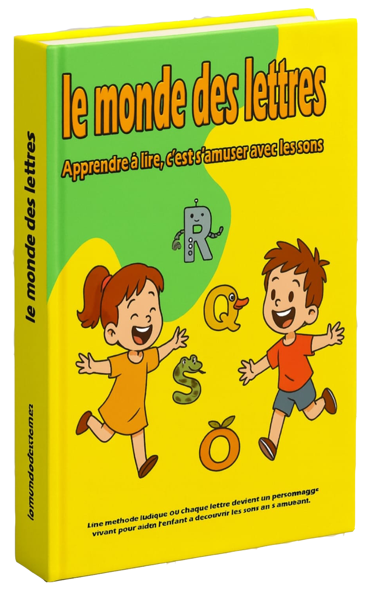

Le monde des lettres est une méthode ludique et sensorielle d’apprentissage de la lecture,
basée sur la personnification des lettres et la découverte des sons à travers le jeu.
Chaque lettre devient un personnage vivant : elle parle, bouge et vit de petites histoires sonores.
L’enfant apprend à reconnaître les sons, à associer les lettres, et à lire naturellement,
en suivant des activités simples, visuelles et amusantes.
Le coffret contient :
Les cartes des lettres magiques :
pour apprendre à reconnaître les lettres personnifiées.
Les cartes des lettres simples :
pour faire des jeux de correspondance et de mémoire.
Trois affiches pédagogiques :
l’alphabet complet, les voyelles animées, et les sons combinés.